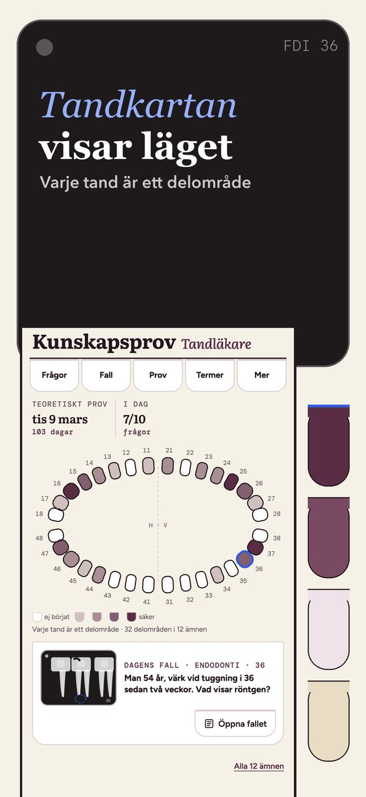
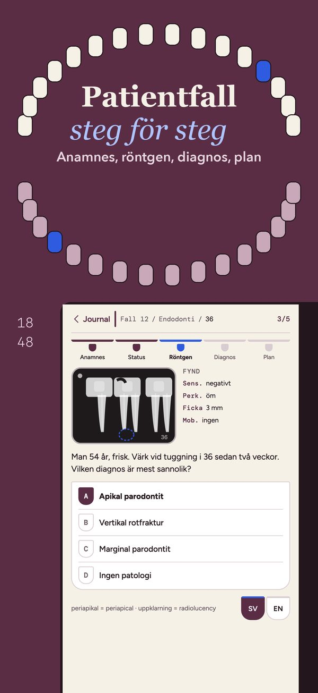
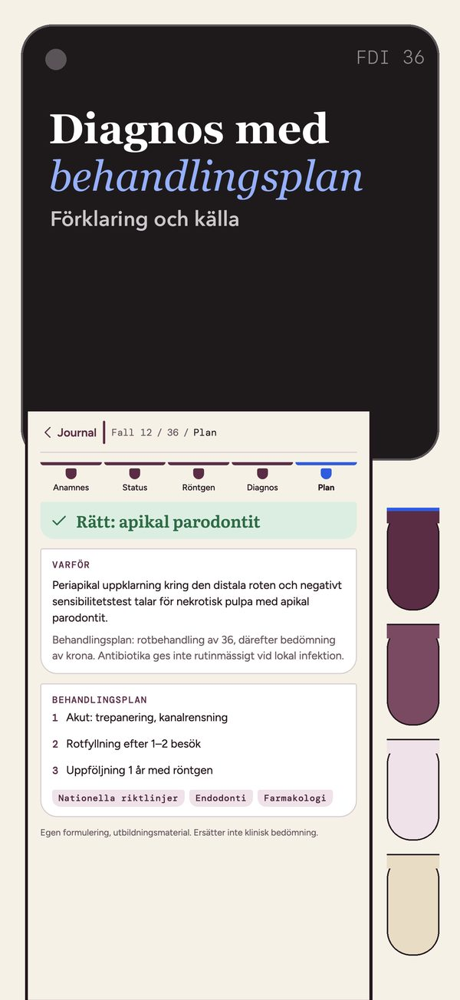

Teoretiskt & praktiskt prov
Engångsköp – ingen prenumeration. Kunskapsprov Tandläkare är för dig som har tandläkarexamen från ett land utanför EU/EES och förbereder dig för kunskapsprovet. Startsidan är en tandkarta: varje tand är ett delområde och fylls när du kan det. Alla frågor och termer finns på svenska och engelska.



Utan köp: 60 frågor, 1 provsimulering, 3 patientfall, 50 termer och 2 stationer. Fullversionen är ett engångsköp: 1 200 frågor, 80 fall, 10 simuleringar, cirka 1 000 termer och 32 stationer. Ingen prenumeration, ingen reklam; Familjedelning.
Kunskapsprov Tandläkare är en fristående studieapp och är inte ansluten till Socialstyrelsen eller något lärosäte. Frågor och fall är egna och bygger inte på tidigare provfrågor. Utbildningsmaterial – ersätter inte klinisk bedömning. Provets upplägg bestäms av provanordnaren; kontrollera alltid din kallelse.
Snart i App Store